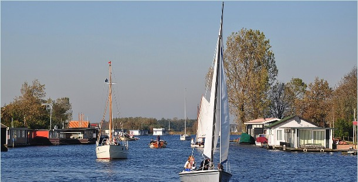
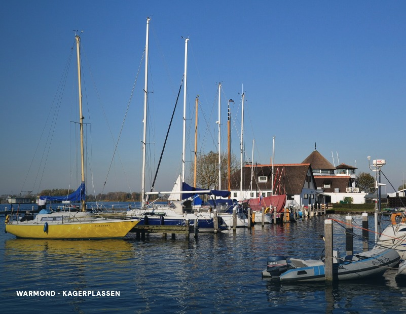
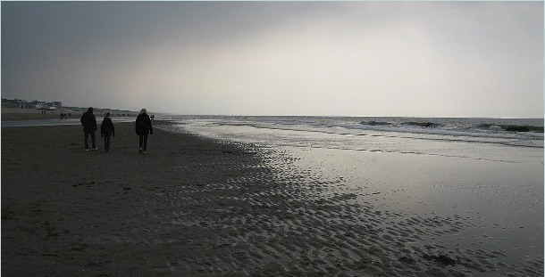

01 / Warmond
Jachthaven Zijldijk
Een plek aan het water in Warmond, midden in het landschap van Teylingen. Een vertrouwd vertrekpunt om de omgeving vanaf het water te beleven.
Meer over Warmond ↗MARItiem TEYLINGEN NOORDWIJK
Jachthaven Zijldijk in Warmond en de steiger in Noordwijk: twee locaties met het water als vertrekpunt.

ONZE LOCATIES
Verken de omgeving van de Zijldijk in Warmond of kies voor de Noordwijkse kust. Hieronder vind je per plek een korte kennismaking en de route.

01 / Warmond
Een plek aan het water in Warmond, midden in het landschap van Teylingen. Een vertrouwd vertrekpunt om de omgeving vanaf het water te beleven.
Meer over Warmond ↗
02 / Noordwijk
Aan de kust krijgt het water een ander ritme. De vereniging beschikt hier over een lange steiger aan de Leidschevaart, waar 15 leden hun ligplaats hebben.
Meer over Noordwijk ↗OP WEG
Gebruik de informatie hieronder om je bezoek voor te bereiden. Toegangs- en bezoekinformatie is gebaseerd op de beschikbare verenigingsinformatie.
WARMOND
De haven ligt tegen het Joppe en de Kagerplassen aan. Het is nog geen 5 minuten varen. Vanuit de haven kunnen ook dagtochten gevaren worden via Leiden, Voorschoten, Rijnsburg, Katwijk en Oegstgeest.
In ongeveer 4 uur is een mooi rondje te varen. In Katwijk kan worden aangelegd om het strand te bezoeken.
Met de fiets ligt Leiden op ongeveer 10 minuten fietsen. In de directe omgeving zijn een supermarkt en diverse restaurantjes te vinden.
PASSANTEN
Passanten zijn van harte welkom bij Watersportvereniging Noordwijk / Maritiem Teylingen. Bij de Zijldijk kunt u bij havenkantoor de Julia tijdelijk aanleggen.
Havenmeester Luc (06-51978583) wijst daarna een vrije plaats aan. Iedere avond komt de havenmeester tussen 19.00 en 20.00 uur langs.
In de zomer zijn er altijd leden aanwezig die vragen kunnen beantwoorden.
PRAKTISCHE INFORMATIE
Vaar de Zijl af richting het Joppe in Warmond. Ongeveer 200 meter voor het opvaren van het Joppe ligt rechts het Schoutingeiland. Vaar deze ingang in; rechts bevindt zich de haven van de vereniging.
Het haventerrein is omheind. Lopend of met de fiets kun je via een van de doorgangen het terrein verlaten. Er is parkeergelegenheid net buiten de haven en op het terrein is een AED aanwezig.
Het tarief voor een overnachting is op te vragen bij de havenmeester. Voor elektra wordt aanvullend per overnachting een vergoeding gevraagd. Wi-Fi is gratis; de Wi-Fi- en hekcode krijg je na afrekenen.
Op circa 300 meter ligt een veerpont naar Warmond. Met de fiets is de omgeving goed te verkennen. Op circa 2.500 meter bevindt zich een Albert Heijn.
LID WORDEN
In principe kan iedereen lid worden zolang aan de criteria uit de statuten wordt voldaan. Voor beide locaties geldt een wachtlijst voor een ligplaats. Voor de Zijldijk geldt volgens de aangeleverde verenigingsinformatie vanaf 18 augustus een stop op de wachtlijst.
Lidmaatschap: €40 per jaar. Voor administratiekosten voor inschrijving wordt €300 gerekend.
Om lid te worden stuur je een e-mail naar Secretariswsvmt@gmail.com. Je ontvangt daarna een inschrijfformulier.
Een nieuw lid betaalt eenmalig inschrijfgeld en jaarlijkse contributie. Daarnaast is een kopie nodig van de polis waaruit blijkt dat de boot tenminste WA verzekerd is.
Aanmelden als lidVEILIG VAREN
Ga je het water op? Controleer de weersverwachting, je boot, kaarten en almanak, stremmingen en actuele vaarweginformatie en zorg dat je de vaarregels kent.
Voor verdere informatie verwijst de vereniging naar Varen doe je Samen!
CONTACT
WSV Noordwijk / Maritiem Teylingen
2362 AE Warmond
Tussen 2 en 4, tegenover het scoutingeiland en voor de molen.